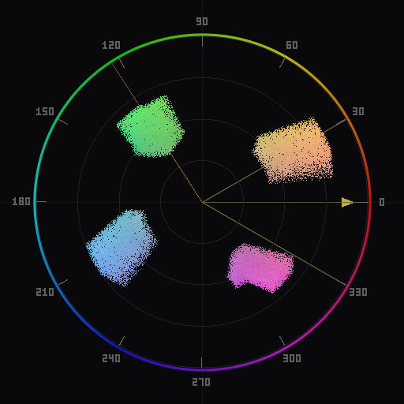

Free Vectorscope Tools for Photographers: What's Available
An honest look at the options, what they actually do, and where each one falls short.

Vectorscopes are standard equipment in video production. Every professional video editor and color grading suite includes one. But for photographers working in Lightroom or Photoshop, vectorscopes have historically been absent. The tools exist for video; they just have not been available where photographers actually work.
This article surveys the free options that are realistically available to a photographer today. The goal is to give you an accurate picture of what each tool does, what it does not do, and where it fits. If you are not sure why you would want a vectorscope in the first place, read What Is a Vectorscope? first.
Why photographers need a vectorscope
A histogram shows you luminance distribution -- how bright or dark your pixels are. It tells you nothing about color. The RGB histogram separates the luminance into three channels, which gives some indirect color information, but interpreting color relationships from three separate luminance curves is difficult and imprecise.
A vectorscope shows chrominance distribution -- where your pixels sit on the color wheel and how saturated they are. It answers questions that histograms cannot: Is there a color cast? Are skin tones on the correct hue axis? How many distinct color populations are in the image? Does the palette follow a particular color harmony? How saturated is the dominant color relative to the secondary colors?
These are questions that photographers deal with every day, especially in color grading, white balance correction, and skin tone work. The vectorscope is the direct tool for answering them.
Built-in histogram tools (Lightroom and Photoshop)
Lightroom Classic provides a luminance histogram in the Develop module. It can display individual RGB channels or a combined luminance view. The histogram updates in real time as you edit. Lightroom also shows RGB values under the cursor, and the color picker in some modules. But there is no vectorscope, no chrominance plot, and no way to visualize the two-dimensional color distribution of the entire image at once.
Photoshop has a Histogram panel that shows luminance and individual channel distributions. It also has the Info panel, which shows color values for the pixel under the cursor (or the average of a sampled area). Color Sampler points can monitor specific locations. These tools are useful for spot-checking individual pixels or regions, but they do not give you a holistic view of the image's chrominance distribution.
In both applications, the fundamental limitation is the same: you can see brightness information for the whole image, but color information only for individual points. There is no built-in tool that maps every pixel's color onto a two-dimensional chrominance plane.
DaVinci Resolve
DaVinci Resolve is a professional video editing and color grading application developed by Blackmagic Design. The free version includes a full-featured vectorscope along with waveform monitors, parade displays, and a histogram. The vectorscope in Resolve is excellent -- it is the same tool that professional colorists use daily on feature films and broadcast content.
For a photographer, the challenge is workflow integration. Resolve is designed for video. To analyze a still photograph, you need to import it into a Resolve project, place it on a timeline, navigate to the Color page, and open the scopes panel. This is not a long process, but it is a context switch. You leave your photo editor, open a different application, import the file, check the scope, then go back to your editor to make adjustments. If you want to see how your adjustment affected the scope, you re-export and re-import.
There is no real-time feedback loop between your Lightroom or Photoshop adjustments and the Resolve vectorscope. Every check requires a round trip. For occasional spot-checks on a handful of images, this is workable. For the kind of continuous, slider-by-slider feedback that makes a vectorscope most useful during editing, the friction is significant.
Resolve also has a steep learning curve. The Color page alone has more controls than most photographers will ever need, and finding the vectorscope within that interface requires some orientation. If you already know Resolve from video work, this is not a problem. If you are a photographer encountering it for the first time, expect to spend time learning the interface before you can use the scopes productively.
That said, Resolve's vectorscope is technically superb. If you need the most detailed, configurable vectorscope available for free, and you are willing to work around the import/export overhead, it is a strong option.
Chromascope
Chromascope is a free, open-source vectorscope tool built specifically for photographers. It runs as a native plugin inside both Adobe Lightroom Classic and Adobe Photoshop, so it works within your existing editing environment without requiring a separate application or a round-trip export workflow.
In Lightroom Classic, Chromascope opens as a plugin dialog that reads the current photo's pixel data and renders a vectorscope. It updates in real time as you adjust Develop sliders. In Photoshop, it runs as a dockable UXP panel that reads the active document and updates as you make changes.
Chromascope provides three density rendering modes (scatter, heatmap, and bloom), three color space options (YCbCr, CIE LUV, and HSL), a skin tone reference line, and color harmony overlays (complementary, split-complementary, triadic, analogous, and square). These features are designed for photography workflows -- skin tone verification, white balance assessment, color grading with harmony targets.
The primary advantage is integration. Because it runs inside your editor, the feedback is immediate. Drag a white balance slider in Lightroom and watch the color distribution shift on the scope in real time. Add a Color Balance adjustment layer in Photoshop and see the effect on the chrominance plot as you move the sliders. This tight feedback loop is what makes a vectorscope most useful during editing, and it is only possible when the scope lives inside the editor.
Chromascope does not try to replicate every feature of a broadcast-grade scope. It does not have waveform monitors, parade displays, or video-specific features like gamut warnings for Rec. 709 or Rec. 2020. It is focused on the specific needs of photographers: chrominance analysis, skin tone verification, and color harmony evaluation.
Choosing the right tool
The decision comes down to where you do your editing and what you need from the scope.
| Tool | Cost | Vectorscope | Integration |
|---|---|---|---|
| Lightroom / Photoshop built-in | Included | No vectorscope. Histograms and point color readouts only. | Native |
| DaVinci Resolve (free) | Free | Full broadcast vectorscope, waveforms, parade. | Separate application. Requires import/export for stills. |
| Chromascope | Free, open source | Chrominance vectorscope with scatter/heatmap/bloom, 3 color spaces, harmony overlays, skin tone line. | Native plugin in Lightroom Classic and Photoshop. Real-time updates. |
If you work in Lightroom or Photoshop and want a vectorscope that works during your normal editing session, Chromascope is the most practical option. It is the only free tool that puts a vectorscope inside those applications with real-time feedback.
If you already use DaVinci Resolve for video work, its vectorscope is more feature-rich than any other free option. Use it for deep analysis or if you need waveform and parade displays alongside the vectorscope.
If you just need a quick check on an occasional image and do not want to install anything, Resolve's free tier is available, though the overhead of importing a still is nontrivial. For regular use, a tool that lives inside your editor will be more practical.
You can download Chromascope and try it on your own images. It takes about two minutes to install and open, and the scope renders immediately once you point it at a photo.